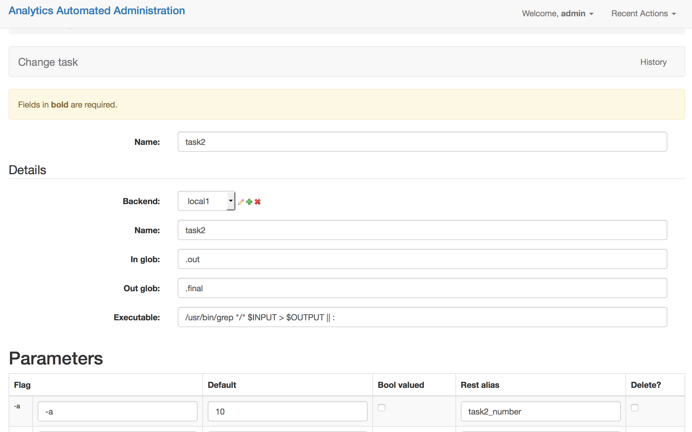

Building Jobs¶
Configuring jobs is most easily accomplished with the user interface. It is possible to do this programmatically and the A_A github account comes with a python script, populate_analytics_automated.py which automatically configures the job we’ll walk through here.
First you need to define a Backend and a series of Tasks and then these Tasks can be plugged together as a Job.
You’ll need to log in by pointing your browser at http://127.0.0.1:8000/admin/ and log in using the superuser details you set during installation.
Define Backend¶
The first thing to do is to define the details for each Backend your tasks will use. In the basic configuration we started only one set of workers watching only the task queue for the LOCALHOST backend so we’ll only configure one LOCALHOST backend.
In the admin interface click on the Backends option and then click on the “Add Backend” button. Fill out the form as per the screenshot below

Name: Gives your backend a useful memorable name
Server Type: Tells A_A what kind of execution location this is
IP & Port: When a backend is remote to the worker these details allow the worker to find the backend on the network. These are not used for the LOCALHOST backend
Path: This is a location on a disk (or network drive) which the backend has access to it will be used to store temporary files which the task needs on execution
Backend Users: You can define a user (user name and passowrd) which the worker will use to execute the task on backend which support this functionality (i.e. Hadoop, Grid Engine). This is ignored for other backend types.
Define a Task¶
Now we define 2 tasks. Return to the admin interface at http://127.0.0.1:8000/admin/. Click on the Tasks link and then select “Add Task”. Fill out the form as below. We’re going to define one task which list the temporary directory and sends the information to a file. And a second task which will grep that file for certain lines. The output of the grep will be available to the users.

Name: A useful memorable name for this task
Backend: The backend where this task will run, as defined above
In Glob: If the executable needs to consume an input file the data will be written to a file with this file ending
Out Glob: If the executable needs to output a file the file will be written to a file with this file ending. Anything contained here will be pushed to the database for the users to pick up when the task is complete
Executable: This is the program the worker will execute.
LOCALHOST Executable Syntax¶
The executable line can be any arbitrarily long unix commandline command even including ‘;’ This is supplemented by a number of control statements which will be interpolated out.
$FLAGS: binary commandline switches i.e. -l
$OPTIONS: command line param which take values i.e -n 100
$INPUT: The location of an input file using the In Glob
$OUTPUT: The location of an input file using the Out Glob
None of these are required.
Parameters¶
The task params take one of two forms. Boolean valued (known as flag), or non-boolean valued.
Flag: This is the option which will be interpolated by either the $FLAGS or $OPTIONS control
Default: This value is required if the flag in non-boolean
Bool Valued: Sets whether this is a boolean flag and therefore whether it needs a default
REST Alias: A short string which will identify the user’s control of this option when they call the REST api, i.e one of the POST params the user will need to pass
Define a Job¶
Now we have some tasks attached to a backend we can define a Job. Return to http://127.0.0.1:8000/admin/ and click on Jobs then select “Add Job”

Name: A useful name for the job. Users will use this when submitting data to the API
Runnable: Whether the user can call this job (NOT YET IMPLEMENTED)
Validators¶
You can set one or more data validators for the jobs. Regular expressions will examine the contents of the incoming file of data to ensure that you they match.
Validation Type: This is the type of validation the incoming data must pass in the Advanced Uses tutorial we’ll show you how to add custom validators to this dropdown
Re String: If you selected ‘Regular Expression’ validation then you need to provide a valid python regular expression.
Steps¶
Now you select which tasks will run in which order.
Tasks: use the drop down to select from your named tasks
Ordering: A numeric value which defines the order the tasks will run in starting with the lowest value. These need not start from 0 and need not be consecutive numbers
Using Your Job¶
You have now defined your first job. Users can use it by making a multi-part form POST request to http://127.0.0.1:8000/analytics_automated/submission and passing all the correct values.
Users must at a minimum pass the following information in
job: The name of the job as defined in the Job form in this example ‘job1’
submission_name: A string by which the user will remember thier submission
email: An email address (currently required even if A_A is not set to return emails)
For the job we defined each task had two params users must pass in values for these. In this instance these had the REST alias of ‘all’ and ‘number’ and are identified in the HTTP submission by having their task name and an underscore added
task1_all: When we defined with Parameter for task1 bool_valued was selected the calling user must pass in True or False
task2_number: When we defined with Parameter for task2 bool_valued was not selected. The user must pass in a string value, typically a number.
And example of using the api can be found in the send_file.py script.
When a submission is succesful the system returns a blob of json with a UUID. Calling http://127.0.0.1:8000/analytics_automated/submission/[UUID] with a GET request will return a json with the current state of the job.